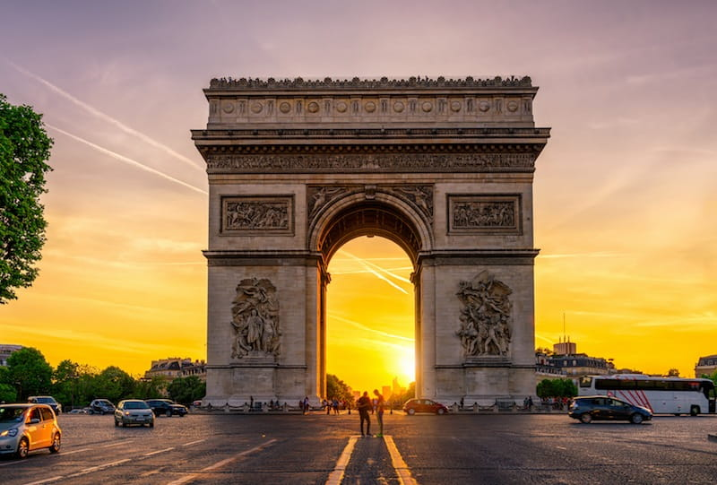

Descubre la maravilla de viajar por el mundo. ¡Haz clic para obtener más información!
París es una ciudad hermosamente diversa que podría recorrer durante la eternidad sin cansarme.
Atractivos Turísticos
-
Torre Eiffel

-
Crucero por el Sena
-
Arco del Triunfo
 -
Vista aerea de París
Itinerario
Día 1:
Visita L'île de la cité, En medio del río que divide en dos la capital parisina encontrarás dos islotes de tierra.
Uno de ellos, l'île de la cité, alberga algunos de los monumentos más emblemáticos de todo París razón por la cual te recomiendo dar inicio al primer día de tu viaje en este lugar.
Día 2:
Notre-Dame de París. Famosa en todo el mundo, Notre-Dame de París constituye un ícono parisino en sí misma.
Esta joya de la arquitectura gótica de inicios del siglo XII es uno de los monumentos más queridos tanto por parisinos como viajeros de todo el mundo.
Día 4:
Tour por el Museo Louvre. El Museo Louvre es a nuestros días uno de los museos más visitados no solo en París sino en el mundo entero.
Esto como consecuencia de la maravillosa colección de historia y arte que llenan sus salas.
Día 5:
Torre Eiffel. Considerada una de los monumentos más importantes de la ciudad una visita a sus instalaciones es requisito obligatorio de todo tour por París.